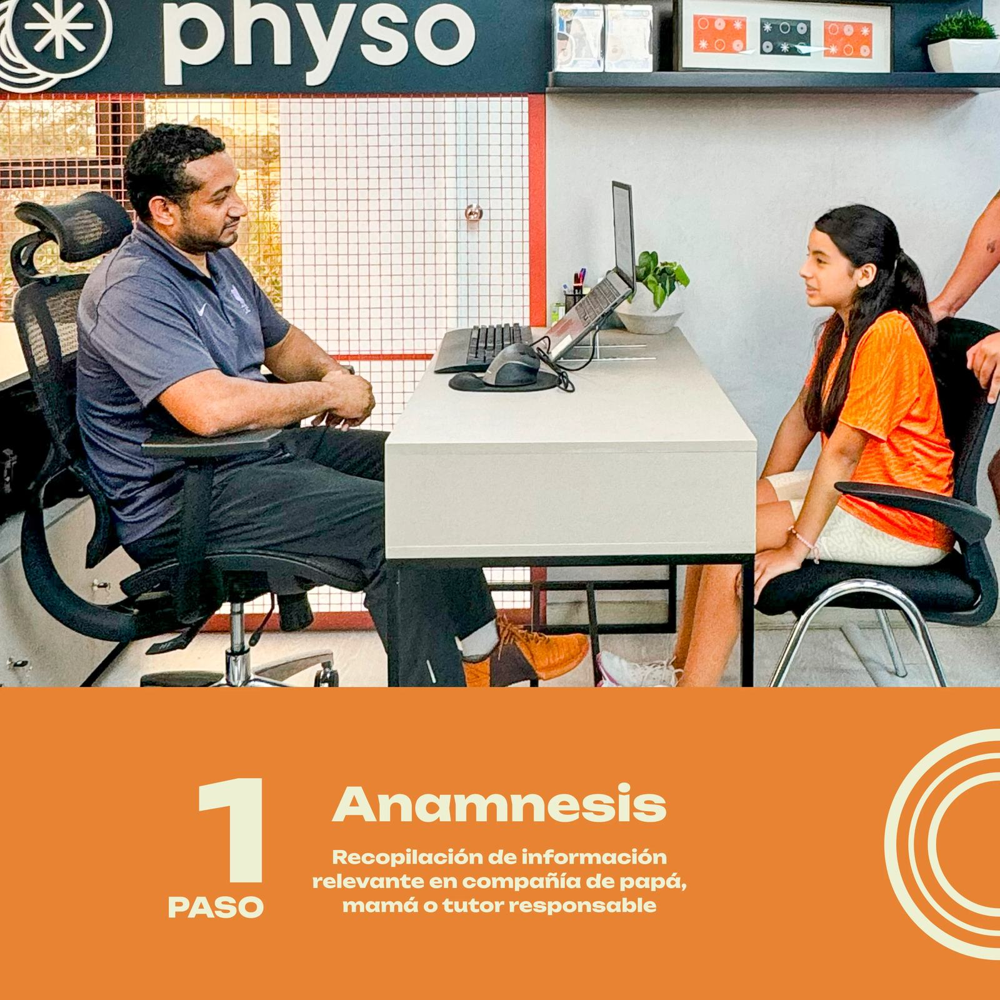

Editor de video y videógrafo · Diseñador gráfico — Miami, FL
Esteban
Guillen
Diseñador gráfico y editor de video con base en Miami. Edito y grabo video para campañas políticas en Harris Media Group, fotografío conciertos y diseño piezas deportivas y de marca. Más de 1,3 millones de vistas en mis videos.
Puedes arrastrar las letras
El muro · trabajo seleccionado
Doce proyectos pegados en la pared.
 Sam Gallucci & NH Senate RepublicansVideo político · 2026 · 900K+ vistas
Sam Gallucci & NH Senate RepublicansVideo político · 2026 · 900K+ vistas
 Bobby Charles for Maine GovernorVideo político · 2026 · 436K+ vistas
MercyMe 2025Fotografía en vivo · 2026 · 22 fotografías
Crowder LiveFotografía en vivo · 2026 · 22 fotografías
Bobby Charles for Maine GovernorVideo político · 2026 · 436K+ vistas
MercyMe 2025Fotografía en vivo · 2026 · 22 fotografías
Crowder LiveFotografía en vivo · 2026 · 22 fotografías
 for KING & COUNTRYFotografía en vivo · 2026 · 16 fotografías
for KING & COUNTRYFotografía en vivo · 2026 · 16 fotografías
 Matchday's 2022–23Diseño deportivo · 2023 · 22 afiches
Matchday's 2022–23Diseño deportivo · 2023 · 22 afiches
 Nahomi Martínez Matchday'sDiseño deportivo · 2023 · 16 afiches
Nahomi Martínez Matchday'sDiseño deportivo · 2023 · 16 afiches
 Luis Benites Matchday'sDiseño deportivo · 2023 · 15 afiches
Qatar 2022Branding y redes · 2022 · 37 piezas
Luis Benites Matchday'sDiseño deportivo · 2023 · 15 afiches
Qatar 2022Branding y redes · 2022 · 37 piezas

Physo · Centro de fisioterapiaBranding y redes · 2024 · 30 publicaciones Zena Coffee StoreWeb y UI · 2024 · 2 pantallas
Zena Coffee StoreWeb y UI · 2024 · 2 pantallas
 Overlays Valorant MulticolorGaming · 2022 · 3 pantallas
Overlays Valorant MulticolorGaming · 2022 · 3 pantallas
Sellado y firmado
Los números, con tinta.
1,3M+vistas en video político
12proyectos destacados
196piezas publicadas
8años de experiencia
Recorrido · mecanografiado
De Lima a Miami, desde 2018.
- 2025 — hoyEditor de video y videógrafoHarris Media Group
- 2025 — hoyFotógrafo de conciertosIndependiente
- 2022 — 2024Diseñador gráfico independienteClubes, jugadores y marcas
- feb. 2022 — jul. 2022Diseñador gráficoDigitalia TEC
- ene. 2020 — jul. 2022Diseñador gráficoArturo's Burger
- mar. 2018 — jul. 2022Diseñador gráficoSoporte Total GUIMI S.A.
Qué hago
Cinco oficios, un mismo cuidado.
- N.º 01
Video para campañas
Edición, motion y versiones para redes de candidatos y causas.
- N.º 02
Fotografía en vivo
Conciertos y eventos: cobertura completa y entrega editada.
- N.º 03
Diseño deportivo
Matchdays, fixtures, anuncios de fichaje y piezas de jugador.
- N.º 04
Branding y redes
Sistemas visuales para marcas y contenido mensual.
- N.º 05
Web y UI
Landing pages y tiendas diseñadas en Figma.